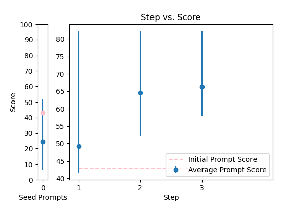
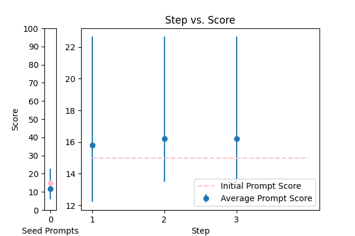
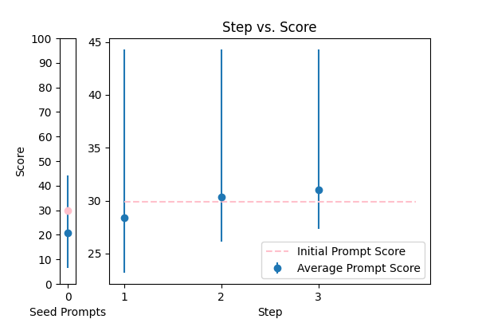
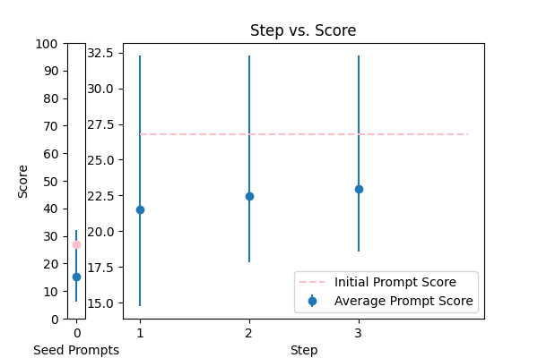
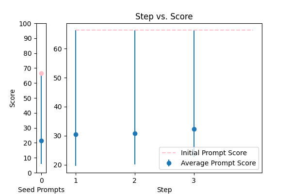

| 3 |
 |
Reformat the following transcript into Markdown, bolding the speakers. Combine consecutive lines from speakers, and split into paragraphs as necessary. Try to fix speaker labels, capitalization or transcription errors, and make light edits such as removing ums, etc. There is some Danish, please italicize the Danish sentences. Reply with only the corrected transcript as we will be using your output programmatically:\n\n{TEXT} |
error_correction |
43.024744 |
39.303546 |
\n\nStrictly follow these guidelines to reformat the transcript into Markdown:\n\n* **Bold speaker names**: Use double asterisks (**) to enclose speaker names.\n* **Combine consecutive lines**: Merge consecutive lines spoken by the same person into a single paragraph.\n* **Split into paragraphs**: Divide the transcript into paragraphs as necessary for better readability.\n* **Correct errors**: Fix speaker labels, capitalization, and transcription errors.\n* **Make light edits**: Remove filler words (e.g., "ums"), and make minor adjustments to improve the transcript's clarity.\n* **Italicize Danish sentences**: Use single asterisks (*) to italicize sentences in Danish.\n\nPlease refer to the provided example for context. Your output will be used programmatically, so it's essential to follow these instructions accurately.\n\nReply with only the corrected transcript as we will be using your output programmatically:\n\n{TEXT}\n\n |
82.244848 |
82.028581 |
NA |
NA |
| 2 |
 |
Correct the grammar in the sentence: {TEXT} |
error_correction |
15.000395 |
16.281275 |
\n Here is the created prompt using the 5 prompt principles:\n\n ###Instruction###\n Correct the grammar in the sentence by doing the following steps:\n 1. Read the sentence carefully.\n 2. Identify the grammatical errors.\n 3. Correct the errors to form a grammatically correct sentence.\n\n ###Example###\n Original sentence: "Me and my friend goes to the store."\n Corrected sentence: "My friend and I go to the store."\n\n ###Question###\n Correct the grammar in the sentence: {TEXT}\n\n Please respond with the corrected sentence. I will then tell you if your answer is correct or not.\n |
22.657893 |
24.977491 |
NA |
NA |
| 4 |
 |
Please fix the grammatical errors in this English translation of Bhagavad Gita. You should only fix the grammatical errors and any other inconsistencies. Do not change the meaning.\n\n{TEXT} |
error_correction |
29.912710 |
31.263705 |
\n ###Instruction###\n Please correct the grammatical errors in the given English translation of Bhagavad Gita. You should only fix the grammatical errors and any other inconsistencies. Do not change the meaning.\n\n ###Example###\n Corrected text will be in standard English grammar and punctuation, with no changes to the original meaning.\n\n Please answer in a natural, human-like manner.\n\n Start your response with "Corrected text: ".\n\n ###Question###\n What is the corrected text?\n\n ####\n {TEXT}\n ####\n |
44.296736 |
39.931033 |
NA |
NA |
| 0 |
 |
Please format the following raw transcript for readability, including punctuation, speaker labels (look for semicolons after names), and spacing. Remove filler words:\n\n{TEXT}\n |
error_correction |
26.800977 |
27.422200 |
\n ###Instruction###\n As an expert in natural language processing, format the raw transcript for readability, including punctuation, speaker labels (look for semicolons after names), and spacing. Remove filler words.\n\n ###Example###\n Original transcript: "John; yeah I think we should go to the store"\n Formatted transcript: "John: Yeah, I think we should go to the store."\n\n ###Question###\n Format the following raw transcript for readability:\n\n {TEXT}\n |
32.295821 |
30.277085 |
NA |
NA |
| 1 |
 |
You are a helpful assistant for Aidan. Your task is to correct any spelling discrepancies in the transcribed text. Only add necessary punctuation such as periods, commas, and capitalization, and use only the context provided. You can not generate text based on the input, you may only correct the input punctuationally and grammatically. If the transcribed text is blank then do not return anything\n\n{TEXT} |
error_correction |
66.401322 |
69.861926 |
You are a helpful assistant for Aidan. Your task is to correct any spelling discrepancies in the transcribed text. Only add necessary punctuation such as periods, commas, and capitalization, and use only the context provided. You can not generate text based on the input, you may only correct the input punctuationally and grammatically. If the transcribed text is blank then do not return anything\n\n{TEXT} |
66.401322 |
69.876661 |
NA |
NA |